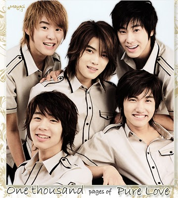

Tvxq
TVXQ, um acrônimo de Tong Vfang Xien Qi, é um boy group sul-coreano formado pela SM Entertainment em 2003.
Na Coreia do Sul eles são conhecidos como Dong Bang Shin Ki ou Dong Bang Shin Gi, às vezes abreviado como DBSK.
No Japão, foram introduzidos como Tohoshinki pela sub empresa da Avex, Rhythm Zone, em 2005.
Kim Jaejoong (ex-membro)
Curiosidades
Data de nascimento : 26 de janeiro de 1986
Cor favorita : Preto e branco
Altura: 1,78
1- Jaejoong tem medo de baratas.
2-Usa máscara nos olhos para dormir.
3- Tem fobia de Coca-Cola, pois ele uma vez entrou em um concurso de "quem toma mais Coca-Cola" e acabou desmaiando depois de beber muito.
4- Tem medo de água porque não sabe nadar.
5- Aprendeu sozinho a tocar o piano.
6- Queria ser dono de um supermercado.
Jung Yunho
Curiosidades
Data de nascimento: 6 de fevereiro de 1986
Altura: 1,82
Cor favorita : Verde
1- O cantor contou que seu avô apoiava seus sonhos, mas acabou entrando em uma condição de saúde ruim quando eles estavam se preparando para debutar. Yunho disse que antes de falecer seu avô fez um sinal de joinha. É por isso que Yunho sempre faz esse sinal nas fotos quando quer parecer cool, porque ele quer mostrar ao avô quando ele fez um bom trabalho.
2-Ele gosta de atuar porque cada tipo de papel permite que ele viva uma vida diferente e isso o ajuda também na vida que ele mesmo tem.
3-O tesouro mais precioso de Yunho é sua irmã.
4- Ele é ator, compositor, dançarino e ator.
5- Ele sabe falar em coreano e japonês.
6- Ele é muito responsável.
Park Yoochun (ex-membro)
Curiosidades
Data de nascimento : 4 de junho de 1986
Altura : 1,80
Cor favorita :
1- Ele coleciona CDS
2- Ele tem medo de aranhas
3- Ele se mudou na 6ª série para os Estados Unidos, em Virgina
4- Ele usa uma pulseira no braço que é o primeiro presente do irmão dele
5- Os avós de Yoochun possuem um restaurante bem conhecido
6- Ele é canhoto
Kim Junsu (ex-membro)
Curiosidades
Data de nascimento : 15 de dezembro de 1986
Altura : 1,77
Cor favorita : Preto e Branco
1-Ele tem um irmão gêmeo chamado Juno
2- Ele tem pele sensível
3- Ele é canhoto
4- Ele ajuda com tarefas
5- Ele gosta de comer frango
6- Segundo a mãe dele ele entra no banheiro fazendo moonwalk
Shim Changmin
Curiosidades
Data de nascimento : 18 de fevereiro de 1988
Altura : 1,84
Cor favorita :
1-Ele não é muito de falar.
2- Changmin gosta de comer e cantar
3- Quando está estressado ele come muito.
4- Em janeiro de 2008, Changmin se ofereceu com seu pai para ajudar na limpeza das praias de Taean, Coréia do Sul, após o pior derramamento de petróleo na história do país. Sua viagem a Taean foi planejada para ser realizada em sigilo durante um breve intervalo de suas atividades com o TVXQ durante o novo ano e só foi divulgada à mídia e ao público quando outro voluntário postou isso em um site de fãs. O incidente foi posteriormente confirmado pela agência do TVXQ.
5- Ele gosta muito de carne, ele disse que consegue comer uma quantidade que seria equivalente para 7-8 pessoas.
6- Quando foi no supermercado Changmin comeu várias das amostras grátis de comida que tinham disponíveis antes de comprar os produtos e os vendedores sempre olhavam para ele com um sorriso enquanto ele experimentava as comidas.
- item 1
- item 2
- item 3